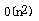

第四课
本课主题： 算法效率的度量和存储空间需求
教学目的： 掌握算法的渐近时间复杂度和空间复杂度的意义与作用
教学重点： 渐近时间复杂度的意义与作用及计算方法
教学难点： 渐近时间复杂度的意义
授课内容：
一、算法效率的度量
算法执行的时间是算法优劣和问题规模的函数。评价一个算法的优劣，可以在相同的规模下，考察算法执行时间的长短来进行判断。而一个程序的执行时间通常有两种方法：
1、事后统计的方法。
缺点：不利于较大范围内的算法比较。（异地，异时，异境）
2、事前分析估算的方法。
算法本身选用的策略 问题的规模 规模越大，消耗时间越多 书写程序的语言 语言越高级，消耗时间越多 编译产生的机器代码质量 机器执行指令的速度 综上所述，为便于比较算法本身的优劣，应排除其它影响算法效率的因素。
从算法中选取一种对于所研究的问题来说是基本操作的原操作，以该基本操作重复执行的次数作为算法的时间量度。 （原操作在所有该问题的算法中都相同）
T(n)=O(f(n))
上示表示随问题规模n的增大，算法执行时间的增长率和f(n)的增长率相同，称作算法的渐近时间复杂度，简称时间复杂度。
求4*4矩阵元素和，T(4)=O(f(4))
f=n*n;
sum(int num[4][4])
{ int i,j,r=0;
for(i=0;i<4;i++)for(j=0;j<4;j++)
r+=num[i][j]; /*原操作*/
return r;
}最好情况：
T（4）=O（0）最坏情况：
T（4）=O（n*n）ispass(int num[4][4])
{ int i,j;
for(i=0;i<4;i++)for(j=0;j<4;j++)
if(num[i][j]!=i*4+j+1)
return 0;
return 1;
}原操作执行次数和包含它的语句的频度相同。语句的频度指的是该语句重复执行的次数。
{++x;s=0;} for(i=1;i<=n;++i)
{++x;s+=x;}
for(j=1;j<=n;++j)
for(k=1;k<=n;++k)
{++x;s+=x;}

平均时间复杂度 依基本操作执行次数概率计算平均 最坏情况下时间复杂度 在最坏情况下基本操作执行次数
二、算法的存储空间需求
类似于算法的时间复杂度，空间复杂度可以作为算法所需存储空间的量度。
记作：
S(n)=O(f(n))
若额外空间相对于输入数据量来说是常数，则称此算法为原地工作。
如果所占空间量依赖于特定的输入，则除特别指明外，均按最坏情况来分析。
三、总结
渐近时间复杂度
空间复杂度